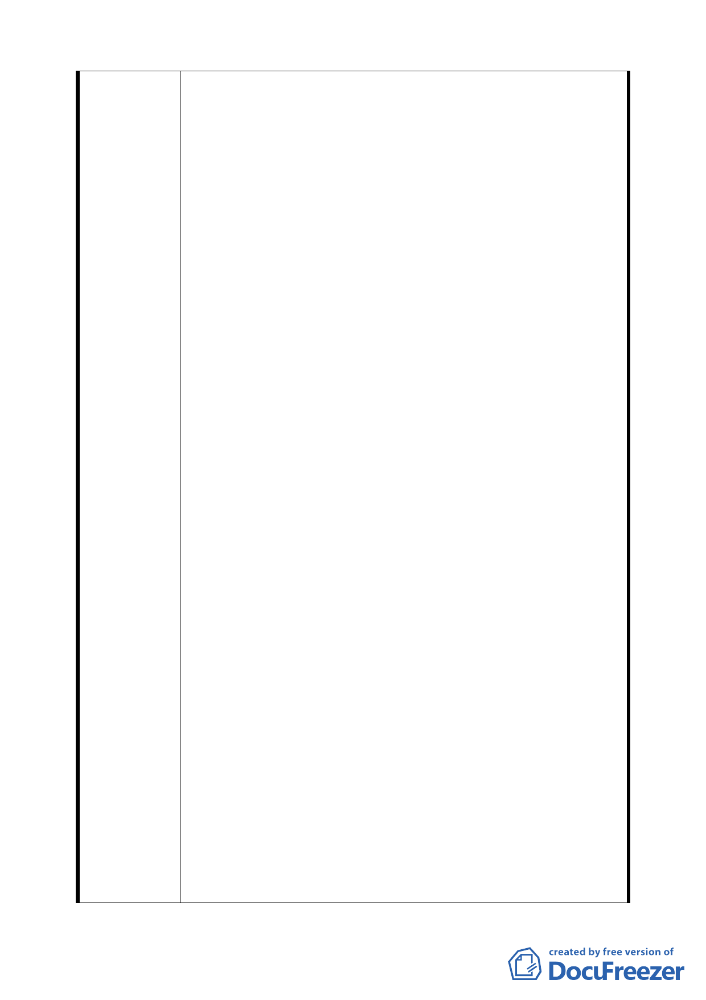

第七項都市設計準則第二款規定，建築物高度不得超過六
十公尺或四十公尺，實施都市更新事業之基地得適用本市
土地 使用分區管制規則第 80 條第 2 款規定放寬；其中位
於本案東南側宏境建設股份有限公司都市更新案(96 建字
第 0243 號)，規劃為地上 14 層地下 3 層，建物高度為 45.8
公尺；而位於基地南方園區街對面之南港軟體園區，其樓
層數為 2l 層，樓高為 88.6 公尺(北市政府工務局 92 使字第
Ol77 號)。本案建築物高度亦現依前述規範詳細檢討說明，
目前規劃為 3 棟地上 14 層地下 5 層，總高度為 48.3 公尺之
建築物。
3.台北市政府於 97.l.31.公告徵求參與「促進都市再生 2Ol0 年
臺北好好看」開發計劃案(府都規字第 09730020l00 號文)中
提及為加速推動都市再生、促進都市更新，以 20l0 年為計
劃目標，公開徵求提出開發計畫使台北市成為水岸、科技、
人文之都。
4.由於本案建築設計係由王山頌建築師及美國 Frmk willlams
事務所共同設計，在規劃設計過程中，建築師 Frank Williams
一直希望能將本案設計成能與杜拜、莫斯科、上海等國際
城市齊名之具國際知名度之地標性建築，然因法規高度限
制下無法實行。
5.細究本案之規劃設計理念與「促進都市再生 20l0 年臺北好
好看」開發計劃案之精神完全相符。現今本案基地面積為
4058 ㎡，若再併入相鄰帶狀公園(面積為 2166 ㎡)，開發面
積將達 6l22 ㎡(大於促進都市再生 20l0 年臺北好好看開發計
畫案中之規定 0.5 公頃規定)，現擬採用台北市土地分區管
制規則第 80 條第 2 款高度放寬規定，修改規劃為 2 棟地上
22 層地下 5 層總高度為 78 公尺之地標性高層建築物。其中
由於相鄰帶狀公園面積 2l66 ㎡之產權屬台北市政府公園路
燈管理處，實施者希望能整體規劃設計並且興闢完成後認
養，加強基地內開放空間與公園綠帶之整體性，朝創造本
案特殊都市生活體驗空間為目標設計，增加空地比及地面
層開放空間面積，並配合實施綠建築及綠建材使用，達到
增進基地周遭建築量體群之空間美感。
6.依據 96.11.15 公展之「修訂台北市南港經貿園區特定專用
區細部計畫通盤檢討案」，得知本街廓細部計畫將於 97 年
33